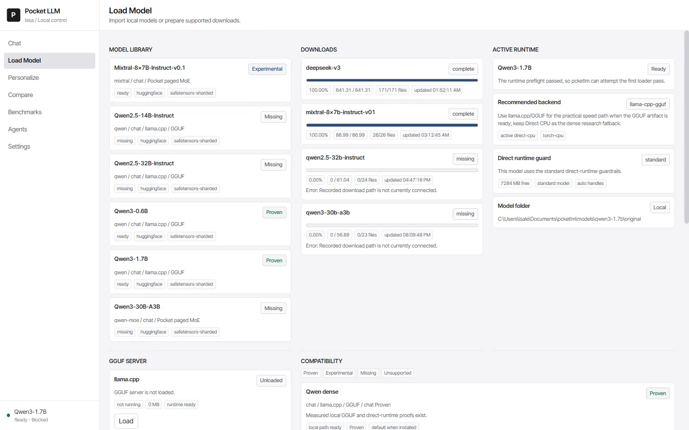
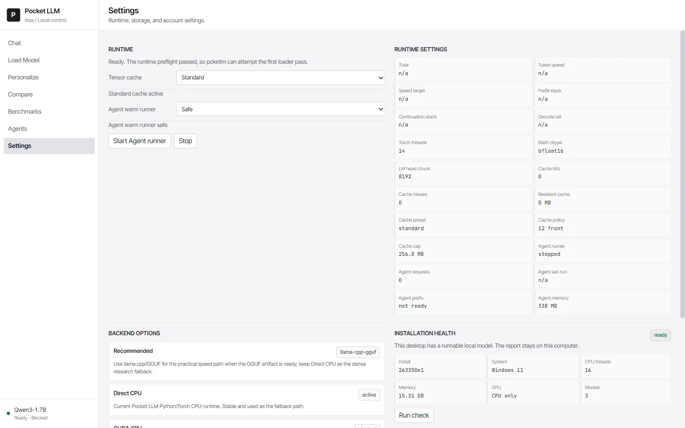

Inference runtime
PocketLM
My own local AI runtime, built from scratch and still in progress. The goal: big models on small hardware, at fast speed.
Source codeQwenand Gemma running locally
CPUno GPU, no cloud
569tests passing
What it is
PocketLM is a local inference experiment aimed at running large language-model components on limited consumer hardware.
What it does
- Explore CPU inference and model weight paging.
- Prototype runtime and local supervisor UI.
- Track technical design and benchmark results as experimental evidence.
How it works
The project explores streaming model weights, CPU-side computation, and other techniques for reducing the memory needed at any one time. The repository also contains an experimental control interface and technical records. Reported speed and model-size results need independent measurement before they are treated as established.

